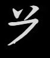

今回は基本字形の残り、OPRUVWYZ の 8 個を片付けます。長いので分割しようか迷いましたが一気に終わらせてしまうことにしました。読者の判断で適宜休憩を入れてください。
ヒの字形
𘠢の字形は西夏文字にたくさん出てくるため、幾つかのキーが分担しています。とりあえずは O のキーで𘠴、P のキーで何もつかない𘠢を打つことを覚えましょう。これらは字の最後にのみ現れます（点がついて PI で終わるものを含む）。
（本家倉頡でも P 「心」のキーをヒの字形に使います。O「人」は関係ない様です。）
O のキー
省略のない字：
| EO | 𗉺 | śia¹ | 漢語「沙」などの音訳 | |
| TGO | 𗐳 | tśjij¹ | 「堡塁」 | |
| TBXO | 𗑜 | gu̱¹ | 「宝物」 | |
| ESBO | 𗊸 | no² | 「以前は」 | |
| AIO | 𗼱 | dzjiw¹ | 「土」 | |
| EAIO | 𗋋 | tśior¹ | 「泥」「土」にサンズイを加えた字。 | |
| GAO | 𗍁 | ·we² | 「城、町」 | |
| LLAO | 𗅉 | nio̱w¹ | 格助詞「の外で」（場所）、「の後で」（時間） |
省略のある字：
| EFBO | 𗋠 | dźja² | 「もち米」 | |
| TCXO | 𗒈 | dźiəj² | 「池」 | |
| EMJO | 𗌝 | sjij² | 「亀」 | |
| ETJO | 𗌞 | na̱² | 「洪水」 | |
| ENBO | 𗌦 | pho¹ | 「湖」漢語「泊」の借用語 | |
| ENXO | 𗌧 | ˑjur² | 「養育」 | |
| GLHO | 𗍍 | tser¹ | 「ウサギ」 | |
| ATLO | 𗫂 | tja¹ | 主題のとりたて助詞「は」 |
P のキー
省略のない字：
| CKP | 𗯞 | bjij¹ | 「鳴る」 | |
| ACKP | 𗤪 | ŋewr¹ | 「震動とともに鳴る」 | |
| ECKP | 𗊟 | so̱¹ | 「響き」 | |
| SBLP | 𗰒 | bow² | 「迅速な」 | |
| MSXP | 𗀉 | kiej² | 「くるぶし」 | |
| MGAP | 𗀔 | tśhja̠¹ | 格助詞「～の上に」 | |
| AMXP | 𗤇 | dew² | 「服従する」 | |
| ATPI | 𗤤 | thu¹ | 「計算する」 |
省略のある字：
| MGMP | 𗀙 | phə̱¹ | 「嫌う」 | |
| TLMP | 𗐴 | nju¹ | 「耳」 | |
| XCLP | 𗏶 | phjo¹ | 「占い用の骨」 | |
| ESBP | 𗋐 | tśhju¹ | 存在動詞「中にある」 | |
| MXXP | 𗀖 | lọ² | 「依存する」 | |
| MKAP | 𗡴 | śjwa¹ | 「川」 |
R のキー
R はを入力します。CN で取りたくなるかもしれませんが、完整原則があるので常に R で取ります。
省略のない字：
| LRX | 𗁅 | lạ¹ | 「手」𘦳はテヘンに相当します。 | |
| RXL | 𘎢 | ta¹ | 「打つ」「手」の互換字です。 | |
| RKL | 𘃍 | no̱¹ | 「指」𘤬はテヘンとは別のユビヘンです。 | |
| TJRX | 𗚚 | zew² | 「腕」 | |
| QRX | 𗍣 | bja² | 「断つ」 | |
| MMQRX | 𘞜 | thwã² | 「断絶する」 | |
| NRX | 𗃑 | tew¹ | 「曲がった」 | |
| BRX | 𗇃 | xwa² | 「壕、井戸」 | |
| RXSX | 𘏚 | kjɨ̠r² | 「部屋」 | |
| RXSNN | 𘎪 | tshji̠j¹ | 「言う」（A形） | |
| RKLRX | 𘃔 | djɨ¹ | 「検査する」 | |
| RLQ | 𘗐 | djij² | 「まさに～すべし」 | |
| SXRX | 𘴆 | tji¹ | 禁止「～するな」 | |
| RTTM | 𘝣 | niəj¹ | 「濁った」 | |
| ARQI | 𗫌 | nji¹ | 「家」 |
省略のある字：
| NRTM | 𗃓 | tew¹ | 「濁った」 | |
| TTRXP | 𗷑 | phji̱² | 「霊感のある」 | |
| ERXB | 𗋼 | tśhiə¹ | 「泡」 | |
| TRXO | 𗔼 | ɣwej¹ | 「戦争」 |
（本家倉頡で R は「口」キーですが、口という形は西夏文字にはありません。また OPQR「人心手口」で「人体類」を構成しますが、西夏倉頡では人体と関係がないので知っていても記憶の助けになりません。）
U のキー
U は𘠇を入力します。BU（ 𘠓または𘡺）の組合せで出てくることが多いです。（本家倉頡では「山」キーで、上開きの凵を入力します。）
省略のない字：
| BSXU | 𗇄 | mẹ² | 「撒く」 | |
| BUA | 𗇅 | tśhjɨ¹ | 「狭くくびれている」ニョウ→右上の順に取ります。 | |
| BUA | 𘉝 | nja² | 「襲撃する」外→内の順に取ります。 |
省略のある字：
| HHMAU | 𗏇 | dji² | 「字」 | |
| MUA | 𗷡 | kji̱r² | 「授乳する」 | |
| BUTJ | 𗟛 | bạ² | 「葉」 | |
| LCUX | 𗂃 | tśhjwa̱¹ | 「分離する」 | |
| LLMUX | 𗅰 | lwəj¹ | 「遅い、にぶい」 | |
| LLAAU | 𗆭 | dźjiw¹ | 「追いかける」 | |
| NTCLU | 𘟣 | dju¹ | 「ある、いる」最も一般的な存在動詞 | |
| TUA | 𘛒 | ŋewr | 「乱雑な」𘩦が字首なので、最初と最後だけ取ってあとは A で終わりです。 |
V のキー
V は𘠈を入力します。𘠣は E でも VN でも取れそうですが、完整原則により E で取らねばなりません。
省略のない字：
| TVLX | 𗐲 | 「綿、軟らかい」 | ||
| JVA | 𗎃 | kie² | 「忌み嫌う」 | |
| JVRX | 𗎍 | khie¹ | 「忌み嫌う」 | |
| RXVRX | 𘐔 | tsʰwew¹ | 「敬礼する」 | |
| LLXVO | 𗅋 | mji¹ | 不完結相否定「～しない」なぜ省略がないかというと、LL を例外的に縦に切らず字首として取るからです。 |
省略のある字：
| AVSA | 𗧠 | kiẹj² | 助動詞「～したい」 | |
| VLQ | 𗃛 | ljow¹ | 姓の一つ「梁」など𘠚が左端まで伸びているため、カマエが字首、右下が字身になります。 | |
| VLSB | 𗘰 | bia̱² | 「黒い」 | |
| VLLL | 𗃢 | śji̱¹ | 「疑惑」 | |
| TJVN | 𗑂 | wər² | 「膜」 | |
| SXVXN | 𘄻 | ljwa¹ | 「ふともも」 |
W のキー
W は横二重線𘠊を入力します。完整原則があるのでこれを MM と取ってはいけません。また W で取れるときは横にスパッと切ることはしません。
省略のない字：
| LWB | 𗀰 | lhjɨ̣¹ | 「風波の音」 | |
| WSX | 𗄀 | 音不明 | 「靴」 | |
| WBRX | 𗙲 | rer² | 「翡翠の頸飾り」 | |
| AWBA | 𗦎 | rar² | 「流れる」 | |
| GWAB | 𗍔 | kjɨr¹ | 「すぐに」 | |
| ELWX | 𗊖 | ·o² | 「酒」 | |
| WUA | 𗍤 | da² | 「立ち上がる」 |
省略のある字：
| WATA | 𗄖 | dźji 声調不明 | 「行く、歩く」 | |
| AWWP | 𗦇 | lew² | 名詞化接尾辞「～する物」 | |
| TWBO | 𗓐 | ɣjɨ̣¹ | 「噂する」 | |
| TJWBP | 𗝓 | kiə² | 「鉢」 |
Y のキー
Y は「卜」の字形や、回転させたナベブタ𘠙を入力します（本家倉頡と同じ）。
省略のない字：
| YBO | 𗭆 | tạ¹ | 「丘」 | |
| EYO | 𗊍 | kiwe̱¹ | 「コウノトリ」 | |
| TJYX | 𗚋 | tśji¹ | 「枝、枝葉末節」漢語からの借用語 | |
| LYMX | 𗁁 | ·wjij² | 「ある」無生物で動かせない物に対する存在動詞 | |
| YBRK | 𗭊 | ·jij¹ | 動詞接頭辞の一つ | |
| YBRX | 𗭒 | khjɨ¹ | 「足」 | |
| SXLYA | 𘅍 | zjịj¹ | 「～した時」 |
省略のある字：
| YLA | 𘉅 | dza¹ | 「雑然とした」 | |
| YXA | 𘊶 | njɨ¹ | 「父の姉妹」 | |
| YXB | 𘛆 | sjwɨ̣j¹ | 「小箱」 | |
| YLLN | 𗇋 | mjijr² | 動作主名詞を作る接尾辞 | |
| TJYBI | 𗜯 | lə² | 「葡萄」 | |
| MDYMD | 𗟴 | khjɨ̱² | 「口腔」 | |
| ASAP | 𗩱 | njwi² | 助動詞「～できる」Y は飛ばすので実際には打ちません。 |
Z のキー
Z は𘤊𘫽を入力します。A𘢌やX𘡃と非常に紛らわしいので注意してください。バツが二つあるのが Z です。
省略のない字：
| AZ | 𗣣 | tshji¹ | 「食事」 | |
| AZI | 𗤙 | da² | 「実家」 | |
| ALZ | 𘴂 | ɣu¹ | 「神仙」 | |
| ALZ | 𗼍 | sa̱¹ | 「近い血縁の」 | |
| ZLA | 𘊢 | tjo² | 「停まる」 | |
| EZ | 𗊌 | nju¹ | 「汗」 | |
| GZO | 𗍊 | sju² | 「の如く、如し」 | |
| NQZP | 𗱁 | thjɨ¹ | 「呼ぶ」 | |
| VZX | 𗃤 | me̱² | 「地勢」 | |
| ZAL | 𗾔 | be² | 「太陽」 | |
| MBAZ | 𘟗 | kowr² | 「歯」 |
省略のある字：
| MAZ | 𘴇 | me̱² | 「ツバメ」 | |
| MAZ | 𘝀 | phji̱¹ | 「飛ぶ」 | |
| ZNTU | 𗿷 | dźjij² | 「いる」有生物に対する存在動詞 | |
| ZYBA | 𗿹 | ˑjow² | 「カラス」 |